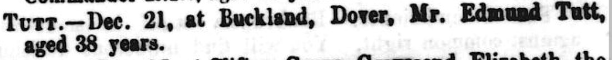

Edmund Tutt c1819 - 1858
[ Home ] | [ Calendar ] | [ Surnames Index ] | [ Errors ] | [ Family History ]A sawyer and the child of James Tutt (a farm bailiff) and Sarah Peters (a nurse), Edmund Tutt, the great-great-grandfather of Nigel Horne, was born in Cheriton, Kent, England c. 18191,2, was baptised there at St Martin's Church on 4 Apr 1819 and married Caroline Page (a laundress with whom he had 6 children: Eliza, Jane, James, Sarah Maria, Caroline Bromley and Edmund Thomas) at Parish Church of St Mary & St Eanswythe, Church Street, Folkestone, Kent, England on 11 Apr 18473 (Folkestone Parish Church).
During his life, he was living in Folkestone on 6 Jun 18411; and at 40 George Street, Buckland, Kent on 30 Mar 18517 - less than a mile from his niece Jane Tutt who was living at 40 George Street, Buckland, Kent.
He died on 21 Dec 1858 at George Street, Buckland, Kent (obstruction of the bowels 1 week intussusception) and was buried at St Andrew's Church, Buckland on 26 Dec 18584,5,6.
Parents
- James was born c. 1779
- Sarah was born c. 1781
Children
- Eliza was born on 15 Sept 1847
- Jane was born on 12 May 1849
- James was born on 16 Jan 1851
- Sarah Maria was born c. Feb 1855
- Caroline Bromley was born c. May 1857
- Edmund Thomas was born c. Aug 1859
Citations
- 1841 England Census Online publication - Provo, UT, USA: The Generations Network, Inc., 2006.Original data - Census Returns of England and Wales, 1841. Kew, Surrey, England: The National Archives of the UK (TNA): Public Record Office (PRO), 1841. Data imaged from the National
- 1851 England Census Online publication - Provo, UT, USA: The Generations Network, Inc., 2005.Original data - Census Returns of England and Wales, 1851. Kew, Surrey, England: The National Archives of the UK (TNA): Public Record Office (PRO), 1851. Data imaged from the National
- England & Wales, FreeBMD Marriage Index: 1837-1915 Online publication - Provo, UT, USA: The Generations Network, Inc., 2006.Original data - General Register Office. England and Wales Civil Registration Indexes. London, England: General Register Office. © Crown copyright. Published by permission of the Cont
- Kent, Canterbury Archdeaconry burials 1538-1988 - Findmypast
- Kent, Canterbury Archdeaconry Burials - Findmypast
- England Deaths & Burials 1538-1991 - Findmypast
- 1851 England, Wales & Scotland Census - Findmypast (was age 32 and the head of the household)
Media
Edmund Tutt - Caroline Page - Marriage Certificate

Edmund Tutt - Caroline Page - Marriage Certificate
Edmund Tutt - Death Certificate

Kentish Gazette - 28 Dec 1858

Kent, Canterbury Archdeaconry burials 1538-1988 - GBPRS/CANT/D/95310580
Kent, Canterbury Archdeaconry burials 1538-1988 - GBPRS/CANT/D/95175654
Kent, Canterbury Archdeaconry marriages 1538-1928 - GBPRS/CANT/M/97001489/1
England & Wales marriages 1837-2008 - BMD/M/1847/2/HZ/000992/029
England Deaths & Burials 1538-1991 - R_276235882
England Births & Baptisms 1538-1975 - R_885431464
Kent Baptisms - GBPRS/CANT/B/96413769
Kent Baptisms - GBPRS/CANT/B/96413779
Family Tree

Map
Generated by ged2site. Last updated on Jul 3, 2024
Known Issues
Death date (21 Dec 1858) has no citations
Date of birth of child Edmund Tutt (abt Aug 1859) is later than his own date of death (21 Dec 1858)